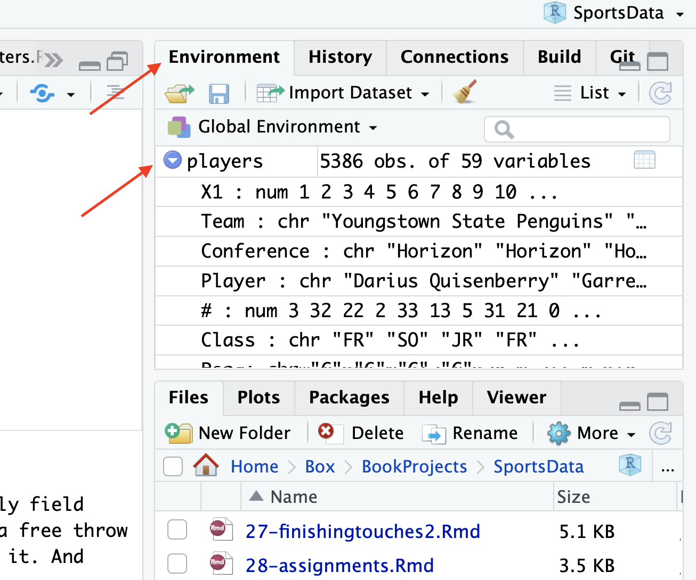

library(tidyverse)5 Mutating data
One of the most common data analysis techniques is to look at change over time. The most common way of comparing change over time is through percent change. The math behind calculating percent change is very simple, and you should know it off the top of your head. The easy way to remember it is:
(new - old) / old
Or new minus old divided by old. Your new number minus the old number, the result of which is divided by the old number. To do that in R, we can use dplyr and mutate to calculate new metrics in a new field using existing fields of data.
So first we’ll import the tidyverse so we can read in our data and begin to work with it.
Now you’ll need a common and simple dataset of total attendance at NCAA football games over the last few seasons.
For this walkthrough:
You’ll import it something like this.
attendance <- read_csv('data/attendance.csv')Rows: 150 Columns: 8
── Column specification ────────────────────────────────────────────────────────
Delimiter: ","
chr (2): Institution, Conference
dbl (6): 2013, 2014, 2015, 2016, 2017, 2018
ℹ Use `spec()` to retrieve the full column specification for this data.
ℹ Specify the column types or set `show_col_types = FALSE` to quiet this message.If you want to see the first six rows – handy to take a peek at your data – you can use the function head.
head(attendance)# A tibble: 6 × 8
Institution Conference `2013` `2014` `2015` `2016` `2017` `2018`
<chr> <chr> <dbl> <dbl> <dbl> <dbl> <dbl> <dbl>
1 Air Force MWC 228562 168967 156158 177519 174924 166205
2 Akron MAC 107101 55019 108588 62021 117416 92575
3 Alabama SEC 710538 710736 707786 712747 712053 710931
4 Appalachian St. FBS Independent 149366 NA NA NA NA NA
5 Appalachian St. Sun Belt NA 138995 128755 156916 154722 131716
6 Arizona Pac-12 285713 354973 308355 338017 255791 318051The code to calculate percent change is pretty simple. Remember, with summarize, we used n() to count things. With mutate, we use very similar syntax to calculate a new value using other values in our dataset. So in this case, we’re trying to do (new-old)/old, but we’re doing it with fields. If we look at what we got when we did head, you’ll see there’s `2018` as the new data, and we’ll use `2017` as the old data. So we’re looking at one year. Then, to help us, we’ll use arrange again to sort it, so we get the fastest growing school over one year.
attendance %>% mutate(
change = (`2018` - `2017`)/`2017`
) # A tibble: 150 × 9
Institution Conference `2013` `2014` `2015` `2016` `2017` `2018` change
<chr> <chr> <dbl> <dbl> <dbl> <dbl> <dbl> <dbl> <dbl>
1 Air Force MWC 228562 168967 156158 177519 174924 166205 -0.0498
2 Akron MAC 107101 55019 108588 62021 117416 92575 -0.212
3 Alabama SEC 710538 710736 707786 712747 712053 710931 -0.00158
4 Appalachian St. FBS Indep… 149366 NA NA NA NA NA NA
5 Appalachian St. Sun Belt NA 138995 128755 156916 154722 131716 -0.149
6 Arizona Pac-12 285713 354973 308355 338017 255791 318051 0.243
7 Arizona St. Pac-12 501509 343073 368985 286417 359660 291091 -0.191
8 Arkansas SEC 431174 399124 471279 487067 442569 367748 -0.169
9 Arkansas St. Sun Belt 149477 149163 138043 136200 119538 119001 -0.00449
10 Army West Point FBS Indep… 169781 171310 185946 163267 185543 190156 0.0249
# … with 140 more rowsWhat do we see right away? Do those numbers look like we expect them to? No. They’re a decimal expressed as a percentage. So let’s fix that by multiplying by 100.
attendance %>% mutate(
change = ((`2018` - `2017`)/`2017`)*100
) # A tibble: 150 × 9
Institution Conference `2013` `2014` `2015` `2016` `2017` `2018` change
<chr> <chr> <dbl> <dbl> <dbl> <dbl> <dbl> <dbl> <dbl>
1 Air Force MWC 228562 168967 156158 177519 174924 166205 -4.98
2 Akron MAC 107101 55019 108588 62021 117416 92575 -21.2
3 Alabama SEC 710538 710736 707786 712747 712053 710931 -0.158
4 Appalachian St. FBS Indepe… 149366 NA NA NA NA NA NA
5 Appalachian St. Sun Belt NA 138995 128755 156916 154722 131716 -14.9
6 Arizona Pac-12 285713 354973 308355 338017 255791 318051 24.3
7 Arizona St. Pac-12 501509 343073 368985 286417 359660 291091 -19.1
8 Arkansas SEC 431174 399124 471279 487067 442569 367748 -16.9
9 Arkansas St. Sun Belt 149477 149163 138043 136200 119538 119001 -0.449
10 Army West Point FBS Indepe… 169781 171310 185946 163267 185543 190156 2.49
# … with 140 more rowsNow, does this ordering do anything for us? No. Let’s fix that with arrange.
attendance %>% mutate(
change = ((`2018` - `2017`)/`2017`)*100
) %>% arrange(desc(change))# A tibble: 150 × 9
Institution Conference `2013` `2014` `2015` `2016` `2017` `2018` change
<chr> <chr> <dbl> <dbl> <dbl> <dbl> <dbl> <dbl> <dbl>
1 Ga. Southern Sun Belt NA 105510 124681 104095 61031 100814 65.2
2 La.-Monroe Sun Belt 85177 90540 58659 67057 49640 71048 43.1
3 Louisiana Sun Belt 129878 154652 129577 121346 78754 111303 41.3
4 Hawaii MWC 185931 192159 164031 170299 145463 205455 41.2
5 Buffalo MAC 136418 122418 110743 104957 80102 110280 37.7
6 California Pac-12 345303 286051 292797 279769 219290 300061 36.8
7 UCF AAC 252505 226869 180388 214814 257924 352148 36.5
8 UTSA C-USA 175282 165458 138048 138226 114104 148257 29.9
9 Eastern Mich. MAC 20255 75127 29381 106064 73649 95632 29.8
10 Louisville ACC NA 317829 294413 324391 276957 351755 27.0
# … with 140 more rowsSo who had the most growth last year from the year before? Something going on at Georgia Southern.
5.1 A more complex example
There’s metric in basketball that’s easy to understand – shooting percentage. It’s the number of shots made divided by the number of shots attempted. Simple, right? Except it’s a little too simple. Because what about three point shooters? They tend to be more vailable because the three point shot is worth more. What about players who get to the line? In shooting percentage, free throws are nowhere to be found.
Basketball nerds, because of these weaknesses, have created a new metric called True Shooting Percentage. True shooting percentage takes into account all aspects of a players shooting to determine who the real shooters are.
Using dplyr and mutate, we can calculate true shooting percentage. So let’s look at a new dataset, one of every college basketball player’s season stats in 2019-20 season. It’s a dataset of more than 5,000 players, and we’ve got 59 variables – one of them is True Shooting Percentage, but we’re going to ignore that.
For this walkthrough:
Import it like this:
players <- read_csv("data/players20.csv")Rows: 5452 Columns: 57
── Column specification ────────────────────────────────────────────────────────
Delimiter: ","
chr (8): Team, Player, Class, Pos, Height, Hometown, High School, Summary
dbl (49): #, Weight, Rk.x, G, GS, MP, FG, FGA, FG%, 2P, 2PA, 2P%, 3P, 3PA, 3...
ℹ Use `spec()` to retrieve the full column specification for this data.
ℹ Specify the column types or set `show_col_types = FALSE` to quiet this message.The basic true shooting percentage formula is (Points / (2*(FieldGoalAttempts + (.44 * FreeThrowAttempts)))) * 100. Let’s talk that through. Points divided by a lot. It’s really field goal attempts plus 44 percent of the free throw attempts. Why? Because that’s about what a free throw is worth, compared to other ways to score. After adding those things together, you double it. And after you divide points by that number, you multiply the whole lot by 100.
In our data, we need to be able to find the fields so we can complete the formula. To do that, one way is to use the Environment tab in R Studio. In the Environment tab is a listing of all the data you’ve imported, and if you click the triangle next to it, it’ll list all the field names, giving you a bit of information about each one.

So what does True Shooting Percentage look like in code?
Let’s think about this differently. Who had the best true shooting season last year?
players %>%
mutate(trueshooting = (PTS/(2*(FGA + (.44*FTA))))*100) %>%
arrange(desc(trueshooting))# A tibble: 5,452 × 58
Team Player `#` Class Pos Height Weight Hometown `High School` Summary
<chr> <chr> <dbl> <chr> <chr> <chr> <dbl> <chr> <chr> <chr>
1 Vander… Trace… 20 JR G 6-2 170 Carmel,… Park Tudor HS 3.0 Pt…
2 Stetso… Alex … 11 SO G 6-2 195 Houston… New Hampton … 0.5 Pt…
3 South … Mark … 11 SO G 6-2 190 Hudson,… Hudson HS 0.6 Pt…
4 Samfor… Jack … 11 FR G 5-10 155 Homewoo… Homewood HS 2.0 Pt…
5 Saint … Brand… 12 SO G 6-3 180 Tremont… Wesclin HS 3.0 Pt…
6 Provid… Tommy… 22 FR G 6-2 175 Bingham… Seton Cathol… 0.6 Pt…
7 Old Do… Quish… 24 SO G 5-10 140 Hampton… Hampton HS 1.0 Pt…
8 Oklaho… J.K. … 54 SR G 6-1 185 Fairfax… Glencoe HS 1.0 Pt…
9 Navy M… Chris… 10 FR G 6-1 183 Bowie, … Annapolis HS 3.0 Pt…
10 Missou… Brook… 25 SO G 6-0 187 St. Lou… De Smet HS 0.6 Pt…
# … with 5,442 more rows, and 48 more variables: Rk.x <dbl>, G <dbl>, GS <dbl>,
# MP <dbl>, FG <dbl>, FGA <dbl>, `FG%` <dbl>, `2P` <dbl>, `2PA` <dbl>,
# `2P%` <dbl>, `3P` <dbl>, `3PA` <dbl>, `3P%` <dbl>, FT <dbl>, FTA <dbl>,
# `FT%` <dbl>, ORB <dbl>, DRB <dbl>, TRB <dbl>, AST <dbl>, STL <dbl>,
# BLK <dbl>, TOV <dbl>, PF <dbl>, PTS <dbl>, Rk.y <dbl>, PER <dbl>,
# `TS%` <dbl>, `eFG%` <dbl>, `3PAr` <dbl>, FTr <dbl>, PProd <dbl>,
# `ORB%` <dbl>, `DRB%` <dbl>, `TRB%` <dbl>, `AST%` <dbl>, `STL%` <dbl>, …You’ll be forgiven if you did not hear about Vanderbilt’s shooting sensation Trace Arbuckle. He played in one game, took one shot and actually hit it. It happened to be a three pointer, which is one more three pointer than I’ve hit in college basketball. So props to him. Does that mean he had the best true shooting season in college basketball last year?
Not hardly.
We’ll talk about how to narrow the pile and filter out data in the next chapter.